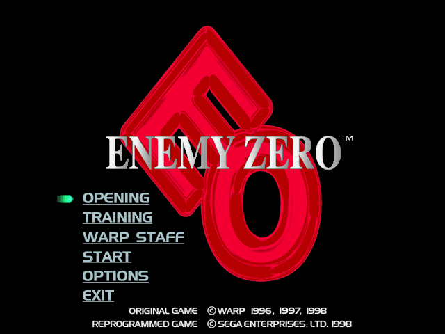
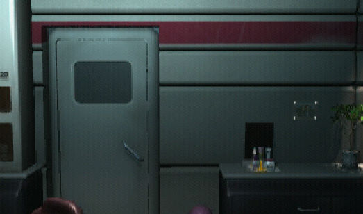

名稱：絕命淒殺／異靈／零號敵人 (Enemy Zero，中文版)
簡介：Warp 1996年出品的冒險解謎遊戲，由SEGA代理發行，1998年移植至Windows。遊戲中
使用大量的動畫，做為劇情的串接 [待補]。


保護：光碟
備註：執行EZERO\EOL.EXE進行安裝遊戲（遊戲會自動依Windows決定使用的語系）。
備註：本遊戲有1998原始版和2001 Xplosiv代理版兩種光碟，後者執行檔較新，但差異不明。
備註：VirtualBox需搭配DxWnd（可全螢幕）。
操作：Enter = 略過開頭動畫